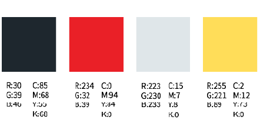
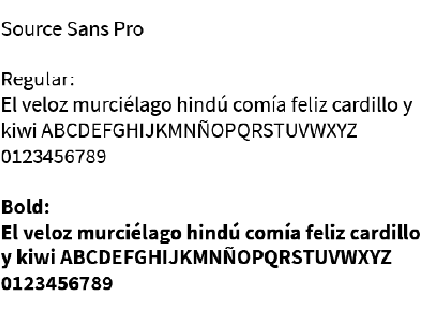

Elecciones
Paleta Cromática
Los colores que podemos ver en el capítulo son principalmente: el verde, el gris y el azul, para los fondos, seguidos de, en menor medida, rojos y amarillos en los personajes principales. En el sitio se ha buscado generar buen contraste utilizando como colores principales, blanco, negro y rojo. Este último, se ha aplicado especialmente para los títulos e iconos de las redes sociales.
Elecciones Tipográficas
Respecto a las elecciones tipográficas se ha utilizado la fuente Source Sans Pro en sus diversas variables, dicha fuente al ser sans serif brinda una buena legibilidad y se complementa bien a la fuente del logo del capítulo debido a su similaridad
